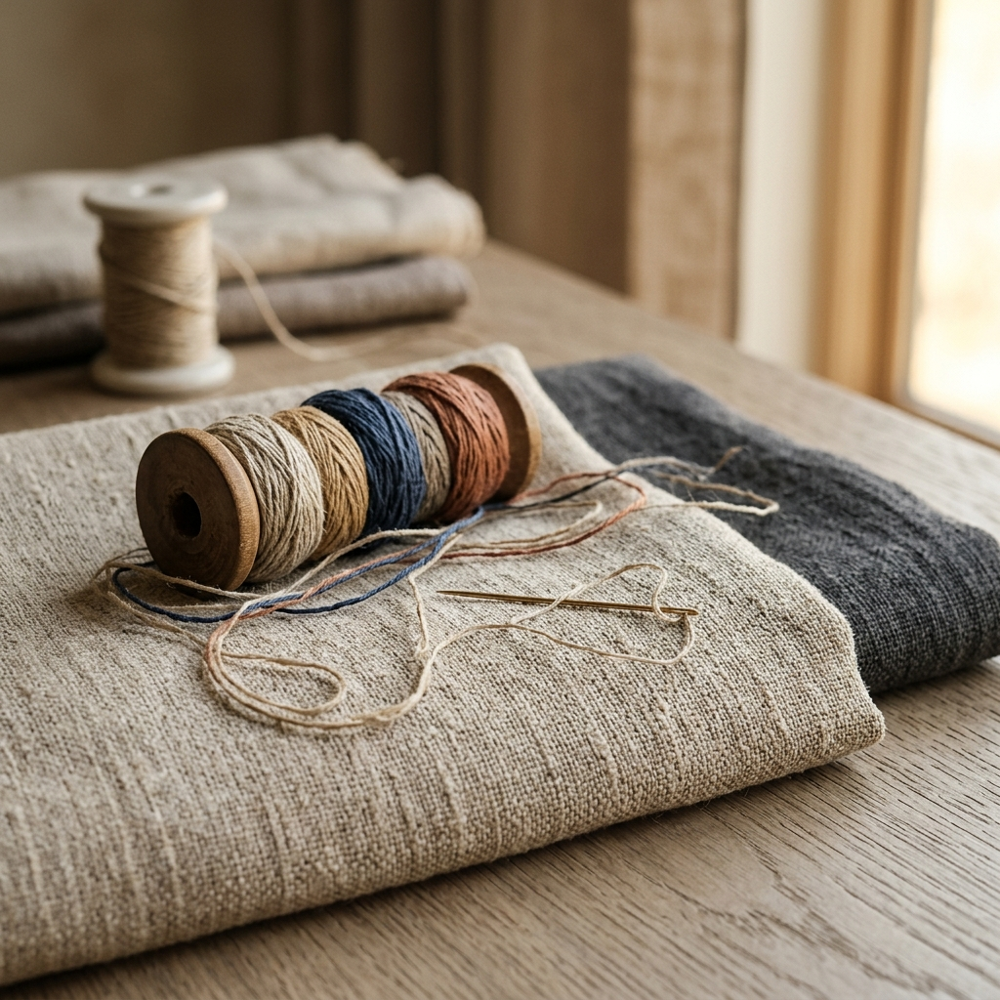
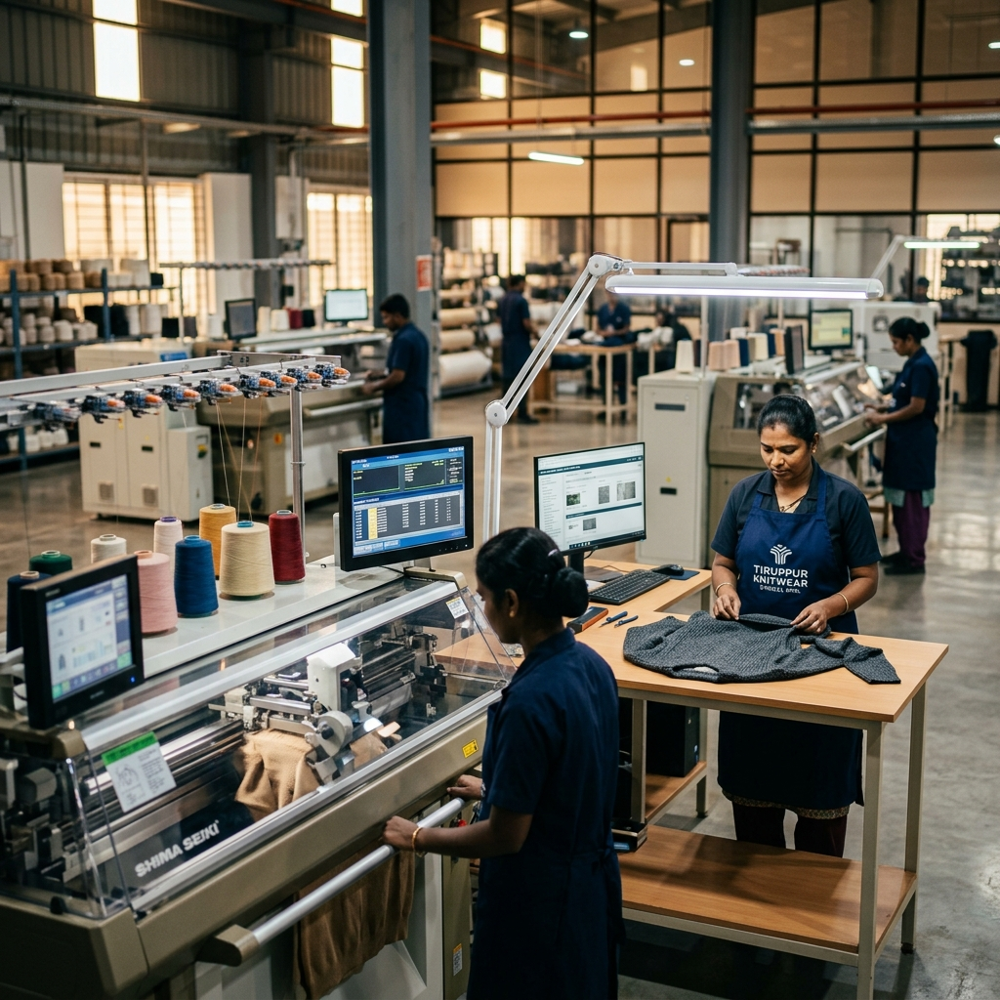

Product Sourcing
Leverage our local network to procure premium organic cotton, blended knitwear, performance yarns, and highly specialized fabrics directly from source mills.
Learn More
Connecting Western and European fashion brands with trusted, ethically audited garment manufacturers in Tiruppur for premium apparel sourcing, quality assurance, GOTS-organic compliance, and scalable production.
Nexo Fashions operates as your in-country buying office, providing complete oversight from initial sketch to final freight loading.
Leverage our local network to procure premium organic cotton, blended knitwear, performance yarns, and highly specialized fabrics directly from source mills.
Learn MoreWe match your product style, certifications, and volume needs with GOTS, BSCI, or SEDEX audited Tiruppur factories specializing in your specific apparel segment.
Learn MoreTranslate conceptual tech sheets and brand designs into precise CAD layouts, helping with raw fabric engineering, embellishments, and structural styling details.
Learn MoreRapid physical garment prototyping utilizing actual production machinery. We secure quick Fit-sample, Size-set, and Pre-production sample approvals.
Learn MoreRigorous inline inspections, pilot run assessments, and random statistical pre-shipment AQL 1.5/2.5 auditing to guarantee zero defect batches.
Learn MoreContinuous monitoring of ethical social standards, fair wages, zero child labor policies, environmental effluent plants, and GOTS carbon footprint audits.
Learn MoreOur dedicated coordinators track fabric dyeing cycles, cutting patterns, printing registers, and packaging to maintain strict delivery targets.
Learn MoreStreamlined consolidation of products across factories, overseeing customs filings, container stuffings, port handlings, and ocean/air freight booking.
Learn MoreFrom luxurious organic knitwear to technical active garments, we source premium apparel backed by Tiruppur’s advanced factories.
Luxury Polos, structured hoodies, heavy French Terry crewnecks, and premium t-shirts engineered for durability.

Contemporary silhouettes, dynamic garment-dye washes, custom embellishments, and modern streetwear brands.
OEKO-TEX certified fabrics, ultra-soft combed cotton, organic rompers, and safe, compliant infantswear.
TECHNICAL yarns, moisture-wicking weaves, compression knit fabrics, anti-microbial treatments, and activewear.
100% GOTS-certified organic cotton fibers, non-toxic vegetable dyes, and traceable ethical cotton farming hubs.
Recycled polyester blends, Tencel, bamboo fibers, waterless dyeing processes, and zero-waste patterns.
Premium bedding, luxurious waffle-weave towels, durable kitchen linens, and organic home accessories.
Custom neck labels, bespoke hangtags, custom packaging, brand-specific barcode inserts, and polybags.
Tiruppur accounts for over 90% of India's cotton knitwear exports, forming one of the world's most vertically integrated textile clusters. Here, spinning mills, dye houses, knitting lines, and final packaging yards operate in a tight 20-kilometer radius.
Fibers are spun, knitted, dyed, and sewn within the same local region, cutting production lead times by up to 30 days compared to scattered networks.
Pioneering Zero Liquid Discharge (ZLD) dyeing facilities that recycle 95% of water, utilizing wind and solar generation farms to cut grid reliance.
Home to generations of expert sewing craftsmen, flatlock stitchers, embroidery masters, and modern automated fabric cutters.
We streamline the complex B2B sourcing lifecycle into 8 structured gates to guarantee complete milestone transparency.
Submit designs, tech sheets, target costings, and certification needs.
Review fibers, weights, construction specs, and target budgets.
Connect with the ideal audited vendors best suited for the line.
Develop Fit-samples and Lab-dips on actual production machines.
Consolidate pricing structures to unlock local tax and scale benefits.
Monitor knitting, dyeing, custom printing, and finishing cycles.
Execute inline audits and final pre-shipment AQL standard checkouts.
Manage custom filings, stuffing, and secure maritime freight shipping.
Our handpicked, strictly audited factory partners host advanced machinery lines. We manage relations across these plants to match your orders with optimal setups, giving you both speed and cost advantages.
Nexo Fashions strictly coordinates orders with certified factory lines. We verify and hold updated copies of all social compliance certificates.
Ensuring ethical labor practices, safe workspaces, and standard hourly wages.
SMETA 4-Pillar audits measuring corporate ethics and raw supply logistics.
Traceable organic cotton pathways from organic fiber harvesting to printing.
Guarantees fabrics are completely chemical-safe for baby skins and direct contact.
Strict quality management systems spanning material sourcing to packaging.
In addition to standard factory audits, Nexo Fashions deploys independent inspectors to run inline raw testing, color fastness tests, dimensional stability shrinkage tests, and final container verification.
Read how Nexo Fashions helps international clothing brands solve complex procurement roadblocks in Tiruppur.
The Challenge: Needed high-density, custom-dyed French Terry fabric (450 GSM) in low initial volume (700 pcs/style) with custom vintage pigment washes and strict flatlock stitching.
The Solution: Matched with a niche specialty apparel boutique in Tiruppur. Engineered fabric yarns and oversaw custom mineral dye washes to guarantee premium texture and fit profiles.
The Challenge: Sourcing pure, traceable organic knitwear. Needed GOTS transaction certificates at every stage of fiber spinning, fabric knitting, eco dyeing, and final assembly.
The Solution: Placed orders with GOTS-certified vertical spinning and sewing networks. Managed the processing of transaction certificates (TCs) for every production batch to guarantee absolute transparency.
"Nexo Fashions serves as our direct eyes and ears on the Tiruppur production floor. Their QA engineers caught and corrected fabric shrinkage discrepancies before cutting, saving us thousands of Euros. They are highly reliable."
"Finding GOTS certified factories that accommodate custom streetwear cuts in moderate volumes was tough. Nexo matched us with excellent suppliers and handled all the complex compliance paperwork seamlessly. A world-class partner."
"Their technical knowledge of fabric construction is outstanding. We had complex design blueprints that local exporters struggled with, but Nexo Fashions mapped out the manufacturing processes beautifully. Highly professional team."
We coordinate logistics and custom clearing lines for global imports, servicing established apparel companies, sustainable startups, and retail houses across Europe, the United Kingdom, Scandinavia, and the United States.
Partner with an on-the-ground buying office that understands Western fashion standards, high quality compliance, GOTS organic tracings, and strict delivery expectations.